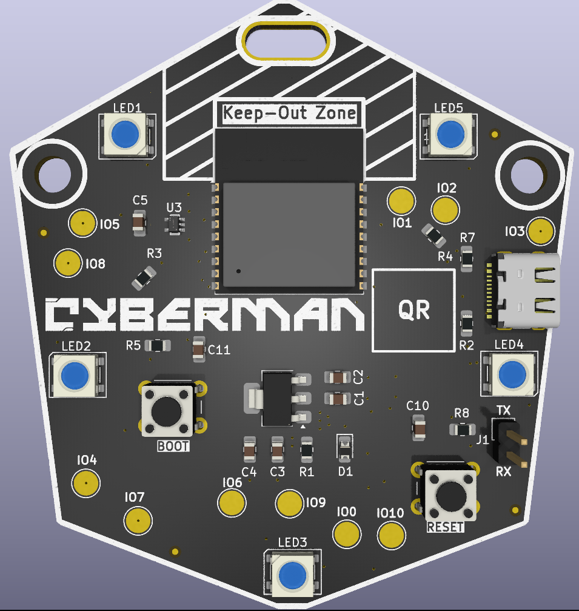
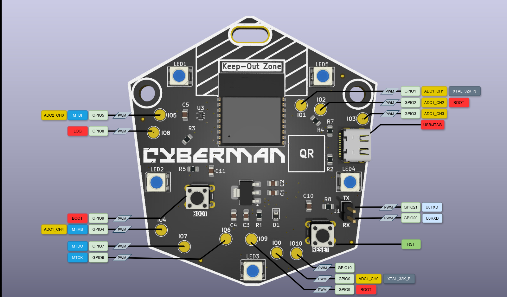

Cyberman HW CTF Documentation¶
Welcome to Cyberman Hardware CTF!
This page serves as your complete documentation for the custom ESP32-C3 badge provided during the event. Use the CTF and Hardware Reference sections to help you hunt for flags. Once the event concludes, this board is yours to keep, and you can flash it with custom firmware.
🚩 Cyberman HW CTF¶
Getting Started (Setup)¶
Follow these steps to power up your Cyberman board and verify it is functioning correctly before the CTF begins.
- Unbox the Board: Inspect the PCB for any physical damage.
- Power It Up: Connect the board to your device using the provided USB Type-A to Type-C data cable.
- Verify Status: You should see the LEDs pulse Red, indicating the CTF is loaded. If not, then the CTF needs to be loaded.
- Flash the Board (OPTIONAL): Use the Web Flasher at HTTPS://WEB_FLASHER_URL to flash the board with the latest version of the CTF.
If your board does not power on, please notify a CTF admin immediately.
Click and drag to rotate the board. Scroll to zoom.
Rules & Scope¶
Please read these rules carefully. Violating the scope of the CTF may result in disqualification.
- In Scope: Extracting firmware, analyzing serial output, intercepting I2C/SPI traffic on the exposed headers, and side-channel attacks on the ESP32-C3.
- Out of Scope: Attacking the CTF infrastructure (scoring server, this documentation site), physical destruction of the board (delidding the ESP32-C3 is not required or allowed).
Flag Format:
All flags in this hardware CTF follow the standard format: cyberman{some_l33t_text_here}
Submit all flags to the scoring server at: [INSERT SCORING SERVER URL]
Serial Connection Guide¶
The primary way to interact with the Cyberman board during the CTF is via UART. You may use PuTTY, screen, or minicom for this.
- Baud Rate:
[115200] - Data Bits: 8
- Parity: None
- Stop Bits: 1
The ESP32-C3 features built-in USB-to-JTAG/Serial. Simply plugging the USB-C cable into your computer should expose a COM port (Windows) or /dev/ttyACM (Linux) / /dev/cu.usbmodem (macOS).
Use a terminal emulator like PuTTY, screen, or minicom:
screen /dev/ttyACM0 115200
⚙️ Hardware Reference¶
Board Overview¶
The official badge and target board for the 1st Edition of the Cyberman HW CTF.

Front ViewSpecifications:
| Resource | Description |
|---|---|
| SoC | ESP32-C3 (Single-core 32-bit RISC-V @ 160 MHz) |
| Wireless | 2.4 GHz Wi-Fi (802.11 b/g/n) & Bluetooth 5 (LE) |
| Memory | 400 KB SRAM, 4 MB embedded Flash |
| Power | 5V via USB-C, regulated to 3.3V |
Pinout & Interfaces¶
Below is the specific GPIO routing for the Cyberman CTF board.

Board Pinout:
| GPIO | Board function | Usage | Constraints |
|---|---|---|---|
| 0 | – | ADC1_CH0, XTAL_32K_P | – |
| 1 | – | ADC1_CH1, XTAL_32K_N | – |
| 2 | – | ADC1_CH2, BOOT | Pull-up 10k |
| 3 | – | ADC1_CH3 | – |
| 4 | – | ADC1_CH4, MTMS | – |
| 5 | WS2812 LED interface | ADC2_CH0, MTDI | – |
| 6 | – | MTCK | – |
| 7 | – | MTDO | – |
| 8 | – | LOG | Pull-up 10k |
| 9 | – | BOOT | Pull-up 10k |
| 10 | – | – | |
| 18 | USB D− | USB/JTAG | Used for USB/JTAG, don’t use |
| 19 | USB D+ | USB/JTAG | Used for USB/JTAG, don’t use |
| 20 | UART0 RX Header | UART0RX | – |
| 21 | UART0 TX Header | UART0TX | – |
All of the pins that can be interfaced with are PWM-capable.
Schematics & PCB¶
Use these schematics to trace signals and identify attack vectors during the CTF.
💻 Firmware¶
The firmware will not be released as source code, however the diagnostics will be. If you really want to dig up on the firmware, there's this page which will help you understand more about this board, and perhaps you'll uncover the last 2 secret flags.
Web Flasher¶
Now that the CTF is over, the board is yours! We have provided an online Web Flasher tool so you can easily install custom, general-purpose firmware (like WLED, MicroPython, or standard AT commands) directly from your browser.
👉 Launch the Cyberman Web Flasher
Note: You must use a Web Serial compatible browser (like Chrome or Edge). Ensure your board is plugged in via USB-C, click the link above, and follow the on-screen instructions.
📥 Resources¶
Downloads¶
Here are all the raw files for the Cyberman ESP32-C3 board for your own hacking and engineering needs.